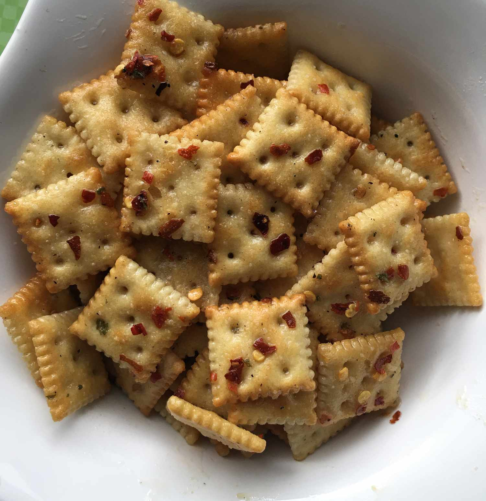

Alabama Fire Crackers

Description
This firecracker recipe turns saltine crackers into a gourmet party snack.
This recipe is cheap, delicious, and requires no cooking! These are really great with chili.
Ingredients
- 1 ⅔ cups vegetable oil
- 2 (1 ounce) envelopes ranch dressing mix
- 3 tablespoons crushed red pepper flakes
- 1 teaspoon garlic powder
- 1 teaspoon onion powder
- 1/4 cup butter or margarine
- ½ teaspoon black pepper
1 (16.5 ounce) package multigrain saltine crackers
Steps
- Place vegetable oil, ranch dressing mix, crushed red pepper flakes, garlic powder, onion powder, and black pepper in a 2-gallon resealable plastic bag. Seal the bag and squeeze with your hands until oil and spices are well combined.
- Place crackers into the bag, seal, and turn the bag over to coat crackers with spice mix. Let sit for about 1 hour, then turn again. Repeat several times until crackers are well-coated with spice mix, then allow the bag to sit 8 hours to overnight. Remove crackers and serve.